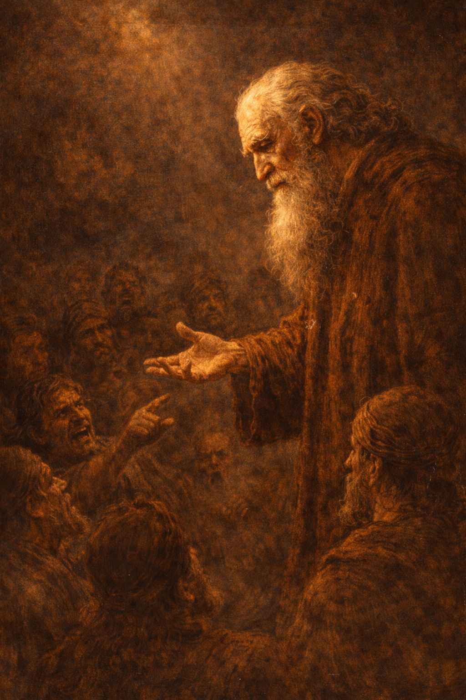

"As It Was in the Days of Noah..."
Lets Read: JST — Matthew 1:41
The Pattern Repeats
Let's Read:
- Moses 8:28-30
- Genesis 6:11-13
How do we choose to be like Noah in our day?
"Noah Found Grace in the Eyes of the Lord"
Let's Read: Moses 8:27
What does Grace mean?

Hebrew: חֵן (chen)
Favor • Acceptance • Divine Enabling Power
God's power that enables us to become what we cannot become alone
The Lord Commanded Noah: "Make Thee an Ark"
Let's Read: Genesis 6:14-16, 22
God's Blueprint:
- 450 ft × 75 ft × 45 ft
- Three stories/levels
- Gopher wood, pitched
- Built over 120 years
- God sealed the door (Gen 7:16)
Ark-Temple Parallels:
- Three levels - temple divisions
- Divine blueprint - revealed design
- God sealed door - covenant protection
- Only covenant keepers entered
- Rested on mountain - like temples
Our Blueprint Today
"When it starts raining, it is too late to begin building the ark."
Discussion: How do we build our ark today? What are the "materials" and "dimensions" the Lord has given us?
The Ark as Our Home
Noah's Family:
- Entered together (Genesis 7:7)
- Refuge from floodwaters outside
- Parents led children into safety
- Sealed in by God's protection
Discussion: How can we make our homes an ark of safety and refuge from the world?
The Ark as the Temple
The Temple Today:
- Sacred covenant space
- God's presence with the faithful
- Ordinances bind us to Christ
- Protection through covenants
Discussion: How important is temple worship in building our spiritual ark?
"Come Thou...Into the Ark"
Genesis 7:1
"And the Lord said unto Noah, Come thou and all thy house into the ark; for thee have I seen righteous before me in this generation."
Who Entered?
- Only those who listened to the prophet
- Only those who trusted God's word despite no visible evidence
- Only 8 souls from entire world (Moses 8:27)
- The rest perished—even though warning was given for 120 years
"Come Thou...Into the Ark"
THE PATTERN: Many called, few chosen (Matthew 22:14). Many hear prophet, few obey.
THE QUESTION: Will you be among the few who enter, or the many who ignore the warning?
"I Do Set My Bow in the Cloud"
Genesis 9:13
Let's Read: Genesis 9:12-17

The Rainbow Covenant:
- Rainbow = visible token of God's covenant
- JST Genesis 9:21-25 – Rainbow existed before, given new covenant meaning
- Appears after storm – God's promises outlast trials
- Universal reminder – everyone can see it
- First covenant token given to all humanity
What Tokens Help You Remember?

Ancient Token:
- Rainbow – Noahic covenant
Our Covenant Tokens:
- Sacrament – Renew baptismal covenant weekly
- Temple garment – Daily reminder of temple covenants
- Scriptures – Word of God in our hands
- Sabbath day – Time as covenant token
What Tokens Help You Remember?
Which token is most meaningful to you right now? Why?
Noah: Prophet and Preacher
Noah's Prophetic Ministry:
- Called by God to warn (Moses 8:16)
- Preached repentance for 120 years (Moses 8:17)
- Built ark as commanded—even when it seemed strange
- Rejected and mocked (Moses 8:20)
- Saved his family through obedience

"A perfect and loving Father in Heaven has chosen the pattern of revealing truth to His children through a prophet."
Following President Oaks

How is President Oaks like Noah? What is he warning us about?
What is one prophetic invitation you're working to follow right now?
Build Your Ark Now
What We've Learned:
- Our day = Noah's day – wickedness, violence, rejection of prophets
- Grace sustains us – enabling power through Jesus Christ
- The ark = temple – covenant space of safety
- Build before rain comes – prepare NOW, not in crisis
- Covenant tokens strengthen memory – sacrament, temple garment, scriptures, Sabbath
- Follow the prophet – President Oaks is our Noah
Personal Invitations
This Week:
What is one "plank" you will add to your personal ark?
What covenant token will you use more intentionally?
What prophetic counsel will you follow more fully?